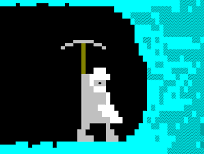
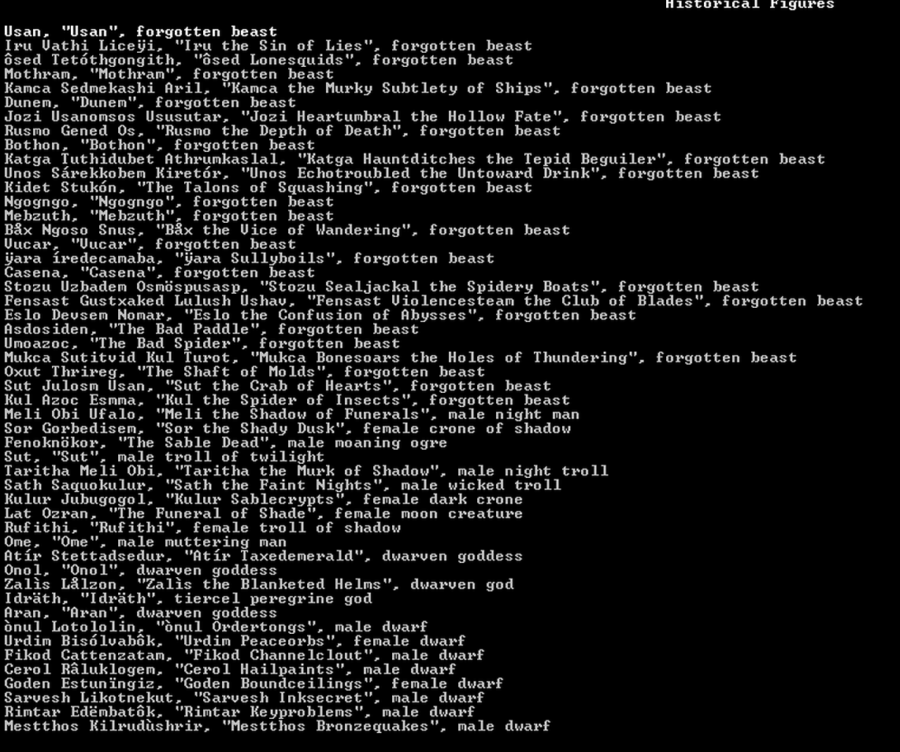
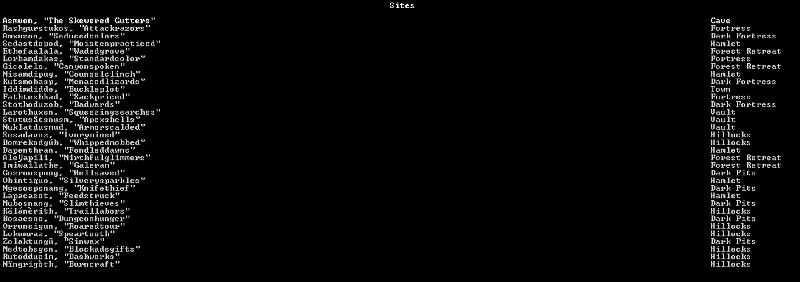
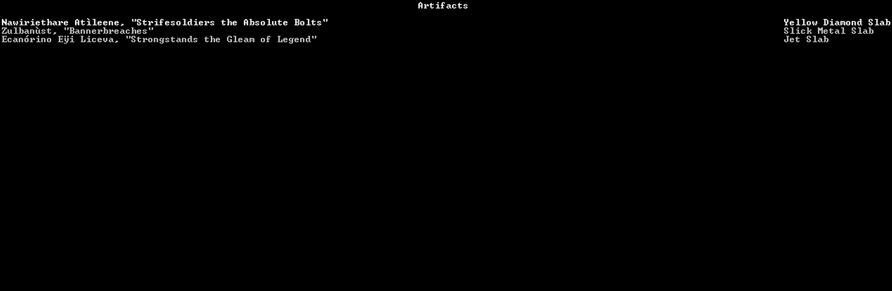
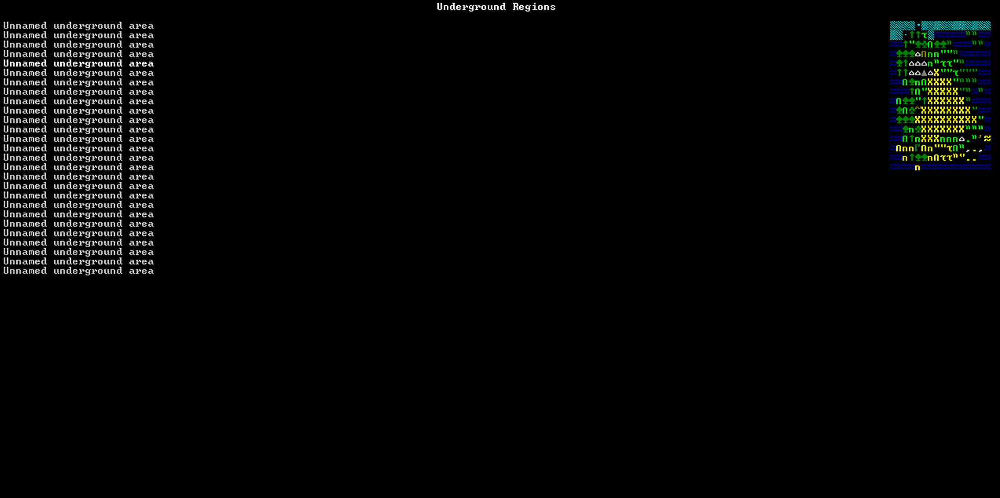
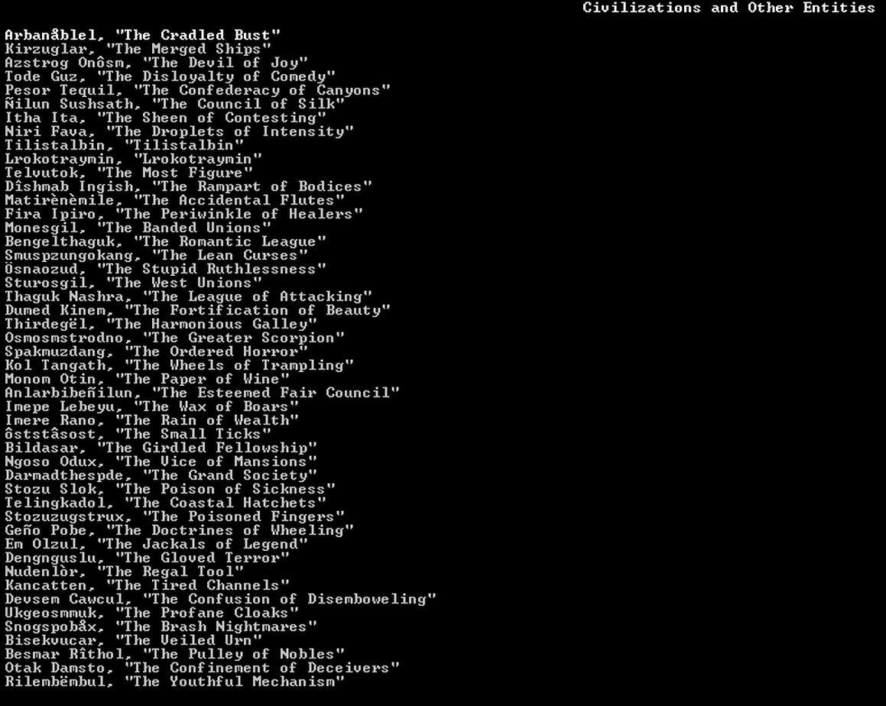
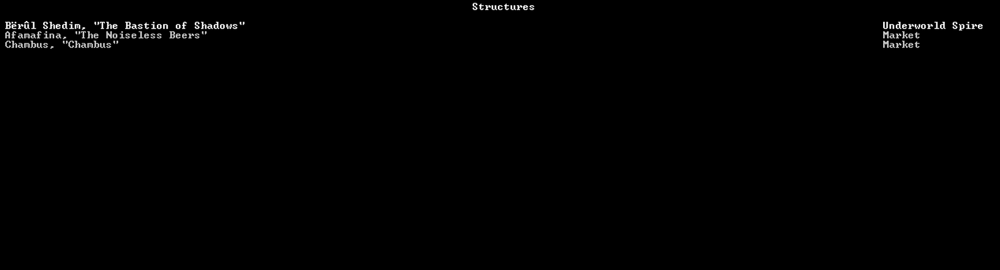
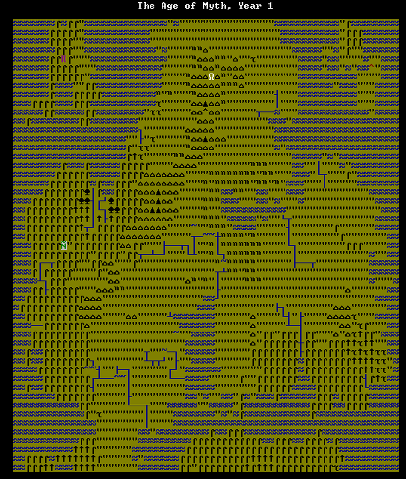
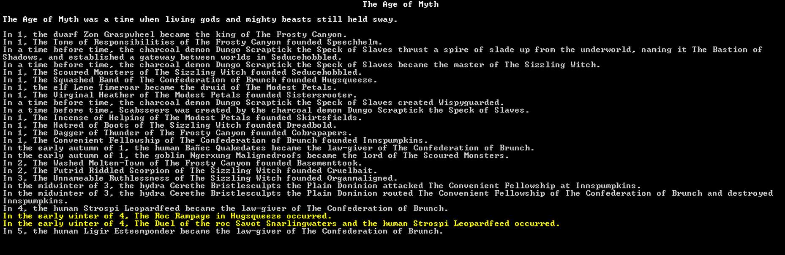

Tutoriels pour le mode légende

Les tutos écrits ci-dessous seront courts. Le but est de faire une série de petits articles qui traiteront chacun d'un sujet en particulier.
Le mode légende n'est en fait rien d'autre qu'un grand livre d'histoire.
Ce mode retient toutes les informations sur votre monde.
Nous pourrons y voir:

Le premier menu du mode Légende est "Historical Figures"
En entrant dans ce menu, nous pourrons voir tous les personnages qui auront parcouru le monde que vous avez créé.
Ce pourra autant être des personnages non joueurs que des personnages que le joueur aura contrôllé via les modes aventurier ou forteresse.
Le nombre de personnages peut très vite augmenter et vous pourrez vous retrouver avec de bons milliers personnages répertoriés.
Prenons exemple d'un monde créé avec 700 ans d'ancienneté. Le nombre de personnage recensé sera de 150 000.
Ca fait un grand nombre de personnes. Aucun être humain censé pourrait lire autant de description.
Il vous est possible de filtrer les recherches en appuyant sur "f".
Malheureusement, ces recherches se feront sur les noms des personnes et non pas sur les descriptions qui les accompagnent.
Chaque personnage aura d'affiché dans la liste son nom (prénom + nom de famille), sa description (si c'est un nain, un elfe ou une autre créature),
sa date de naissance et sa date de mort si le personnage a passé l'arme à gauche avant que nous consultions les légendes.
Nous pouvons voir un peu plus en détail les faits notables d'une personne en appuyant sur Enter sur son nom.
La page du personnage s'affichera.
Nous pourrons y lire pas mal d'information: la date de naissance du personnage, la parentèle du personnage (si elle est connue ce qui ne sera généralement pas le cas)
En dessous, ce succéderont ses faits d'armes et autres faits notables. Un personnage que vous aurez contrôllé aura beaucoup plus de chose là-dedans qu'un personnage lambda.
Encore en dessous, nous aurons tout les autres détails notable. Par exemple, si le personnage a été en relation avec un autre personnage historique, si le personnage était membre d'une entité
s'ils sont relié à un lieu et le nombre d'être vivant qu'ils ont tués.
Dernière chose notable à dire: quand vous parcourerez la liste de personnage, vous en apercevrez d'une couleur différente.
Ce seront tout simplement des personnages que vous aurez contrôlé en mode aventurier.
De cette façon, vous pourrez revoir vos exploits ainsi que vos échecs.
Revenir en haut de la page Revenir au début de l'article

La seconde liste est celle des lieux.
Elle énumère tous les endroits présents dans le monde.
Cette liste n'est pas aussi longue que celle des personnage mais elle est malgré tout pas mal fournie.
La liste affiche deux différentes information: le nom du site et le type de lieux.
Il existe beaucoup de types de sites différents: les forteresses (fortress), Les camps (camp), Les tanières (lair), Les tours (tower),
Les tombes (tomb), les fosses sombres, les caves, ...
En appuyant sur "Enter", nous pouvons en voir un peu plus sur un lieu précis.
La page du lieu, affiche toute sorte d'évènement.
Nous avons bien sûr la création du site mais aussi le vol d'objet, l'arrivé de migrant, la mort de personnage, l'abandon du lieu par telle ou telle entité.
Certains lieux seront d'une couleur différente. Ce sera tout simplement toutes les forteresses naines que vous aurez fondé.
Revenir en haut de la page

La page d'artefact va tout simplement lister la liste d'artefact créé depuis la création du monde.
La liste est à peine moins grande que celle des personnages.
Dans la liste, nous pouvons voir, le nom de l'artefact d'un côté, ainsi que le type d'artefact et le type de matériaux de l'autre.
Vous remarquerez que le nombre de livre est impressionnant.
En appuyant sur "Enter", vous pourrez en voir un peu plus sur l'artefact en question.
Sa date de création, son créateur et d'autres petites info sur l'artefact.
Revenir en haut de la page
Régions et régions souterraines

Ensuite, nous avons les régions et les régions souterraines dans deux pages différentes.
Si la page région liste toutes les régions de surface, celle des régions souterraines liste toutes les cavernes sous la surface.
Si la page région liste toutes les régions de surface, celle des régions souterraines liste toutes les cavernes sous la surface.
En appuyant sur "Enter", nous pouvons voir toutes les actions s'étant passée sur le lieu.
Revenir en haut de la page
Civilisations et autres entités

Cette page liste toutes les civilisations et toutes les entités existantes.
Les entités sont des groupes formés qui ne sont pas des civilisations. Ca peut aller des groupe de bandit aux escouades des armées.
Appuyer sur "Enter" permet de voir les actions notables de l'entité. Sa création notamment.
Revenir en haut de la page
La page des art recense toutes les oeuvres d'art créée.
Les oeuvres d'art sont pas mal associé à certain artefact.
Attention, vous ne verrez peut-être pas toutes les oeuvres d'art tout de suite. Pour les voir, vous devriez les avoir vu dans le jeu.
Revenir en haut de la page

Les structures ressemblent fortement aux lieux.
Ce sont des lieux plus spécifiques comme des temples ou des tombes.
Revenir en haut de la page

La carte historique vous permettra de voir l'évolution des sociétés dans votre monde.
Quand vous arrivez sur la carte, vous êtes en l'an 1. Pour avancer dans les année (10 ans par 10 ans) appuyez sur la touche "+".
Pour reculer dans les années, appuyez sur la touche "-".
Pour avancer d'un siècle, appuyez sur la touche "*".
Pour reculer d'un siècle, appuyez sur "/".
Avec le curseur, vous pouvez naviguer sur la carte.
Au fil du temps, vous pouvez voir des tâches avancer sur la carte. Ce sont les influences des civilisations qui augmentent.
Certains territoire pourront être disputés par plusieurs civilisations.
Revenir en haut de la page

Cette page vous permettront de voir les différents âges de votre monde.
Pour chaque âge, vous pourrez voir toutes les actions des personnages de façon chronologique.
Avec la touche "p" vous pouvez toujours décidé si vous voulez voir tous les évènements ou seulement ceux importants.
(ce qui donnera de toute façon beaucoup d'évènement à regarder.)
Revenir en haut de la page